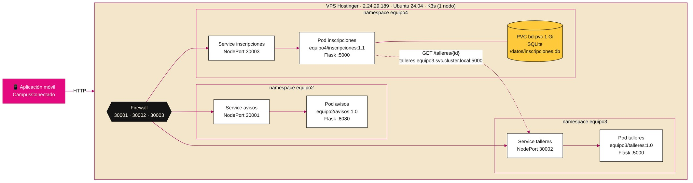
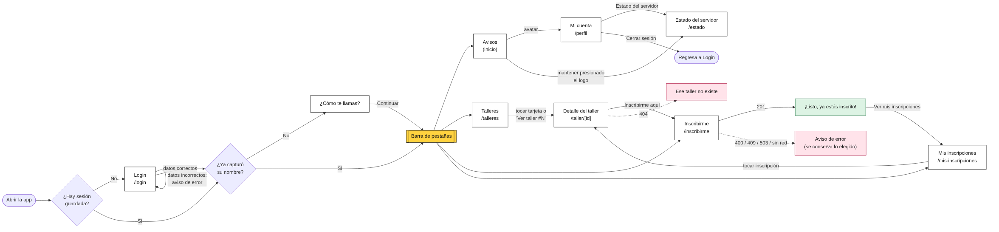

| Proyecto | CampusConectado |
| Asignatura | Servicios en la Nube |
| Institución | Tecnológico Nacional de México · Instituto Tecnológico de Reynosa |
| Cliente | Mtra. Dora Luz Quevedo Valenzuela |
| Elaboró | Ravyn Studio · Dirección de proyecto |
| Versión | 1.0 |
| Fecha | 16 de noviembre de 2026 |
| Estado de verificación | 13 de 13 pruebas funcionales aprobadas contra el servidor de producción (12/11/2026). Revisiones estáticas y pruebas automatizadas de la aplicación aprobadas (16/11/2026). |
Este manual describe de forma técnica los tres servicios web que forman el sistema CampusConectado (Avisos, Talleres e Inscripciones) y establece el procedimiento para integrarlos con la aplicación móvil. Reúne el contrato real de cada API (rutas, métodos, datos de entrada, respuestas y códigos de estado), los comportamientos del servidor que la aplicación debe considerar, la documentación técnica de la propia aplicación y la batería de pruebas con la que se valida la integración.
La información de los servicios se verificó directamente contra el servidor desplegado el 12 de noviembre de 2026, con un resultado de 13 de 13 pruebas funcionales aprobadas. El documento cubre la capa de servicios y su consumo desde la aplicación; la administración del servidor, la instalación de K3s y la operación de cada contenedor se detallan en el Manual técnico del servidor y en la Guía de instalación y operación.
El capítulo 7 documenta la aplicación móvil desarrollada por el Equipo 1: tecnologías, arquitectura, configuración, manejo de errores, inicio de sesión, compilación del APK y decisiones técnicas. Los anexos C y D registran los cambios hechos en la aplicación durante la integración y la bitácora de su desarrollo.
| Convención | Significado |
|---|---|
texto monoespaciado | Rutas, comandos, nombres de archivos, variables y fragmentos de código. |
200, 404… | Códigos de estado HTTP devueltos por los servicios (ver Anexo A). |
| A001, B003, C010… · 21580001 | Matrículas y números de control ficticios utilizados exclusivamente para pruebas. |
| Nota / Importante | Recuadros con información que afecta directamente el funcionamiento. |
El sistema se ejecuta en un servidor privado virtual (VPS) de Hostinger con Ubuntu 24.04 LTS. Cada servicio es una aplicación Flask empaquetada en una imagen Docker y desplegada en un clúster K3s (Kubernetes) de un solo nodo. Cada equipo opera en su propio namespace y su servicio se publica al exterior mediante un Service de tipo NodePort. La aplicación móvil consume los tres servicios directamente por HTTP a través de la IP pública del servidor.

| Servicio | Equipo | Dirección base | Namespace | Imagen |
|---|---|---|---|---|
| Avisos | 2 | http://2.24.29.189:30001 | equipo2 | equipo2/avisos:1.0 |
| Talleres | 3 | http://2.24.29.189:30002 | equipo3 | equipo3/talleres:1.0 |
| Inscripciones | 4 | http://2.24.29.189:30003 | equipo4 | equipo4/inscripciones:1.1 |
Content-Type: application/json.talleres.equipo3.svc.cluster.local./datos/inscripciones.db) sobre el volumen persistente bd-pvc de 1 GiB.La aplicación obtiene las direcciones de los servicios a partir de variables de entorno que se incrustan en el APK al compilarlo. Para operar contra el servidor real se utiliza la siguiente configuración en el archivo .env (desarrollo) o en eas.json / variables del repositorio (compilación):
EXPO_PUBLIC_API_HOST=http://2.24.29.189 EXPO_PUBLIC_PORT_AVISOS=30001 EXPO_PUBLIC_PORT_TALLERES=30002 EXPO_PUBLIC_PORT_INSCRIPCIONES=30003
Cada servicio expone una ruta de salud (GET /salud) que responde 200 con {"estado":"ok"} y se utiliza para verificar su disponibilidad. A continuación se detalla el resto de las rutas de cada servicio.
| Método | Ruta | Descripción y respuesta |
|---|---|---|
| GET | /salud | Verifica la disponibilidad. 200 {"estado":"ok"} |
| GET | /avisos | Devuelve la lista de avisos del campus. 200 con un arreglo de objetos {id, titulo, mensaje}. |
[
{"id": 1, "titulo": "Bienvenida", "mensaje": "Bienvenidos a CampusConectado."},
{"id": 2, "titulo": "Inicio de talleres", "mensaje": "Consulta los horarios de los talleres disponibles."},
{"id": 3, "titulo": "Inscripciones", "mensaje": "Ya puedes consultar la informacion de los talleres."}
]id es numérico.GET /avisos/{id}; una solicitud a ella devuelve 404 en formato HTML (no JSON).| Método | Ruta | Descripción y respuesta |
|---|---|---|
| GET | /salud | Verifica la disponibilidad. 200 {"estado":"ok"} |
| GET | /talleres | Devuelve el catálogo completo. 200 con un arreglo de objetos {id, nombre, horario}. |
| GET | /talleres/{id} | Devuelve un taller por su identificador numérico. 200 con el objeto, o 404 en JSON si no existe. |
[
{"id": 1, "nombre": "Programación en Python", "horario": "Lunes y Miércoles 10:00 - 12:00"},
{"id": 2, "nombre": "Diseño UI/UX Móvil", "horario": "Martes y Jueves 14:00 - 16:00"},
{"id": 3, "nombre": "Fundamentos de Kubernetes y DevOps", "horario": "Viernes 08:00 - 12:00"}
]{"error": "Taller no encontrado", "id_solicitado": 999}/talleres/abc), Flask responde 404 en HTML. La aplicación debe validar el valor antes de enviarlo.| Método | Ruta | Descripción y respuesta |
|---|---|---|
| GET | /salud | Verifica la disponibilidad. 200 {"estado":"ok"} |
| POST | /inscripciones | Registra una inscripción. Respuestas posibles: 201, 400, 404, 409 y 503. |
| GET | /inscripciones?matricula=XXX | Lista las inscripciones de una matrícula. 200 con un arreglo (vacío [] si no hay registros); 400 si falta el parámetro. |
La solicitud debe incluir el encabezado Content-Type: application/json; sin él, el servicio no interpreta el cuerpo y responde 400. El cuerpo contiene tres campos:
POST /inscripciones
Content-Type: application/json
{"matricula": "B003", "nombre": "Ana", "taller_id": 1}| Código | Condición | Cuerpo de la respuesta (real) |
|---|---|---|
| 201 | Inscripción creada | {"id":5,"matricula":"B003","nombre":"Ana","taller_id":1} |
| 400 | Falta un campo o el cuerpo no es JSON | {"error":"Faltan campos obligatorios"} |
| 404 | El taller no existe (verificado con Talleres) | {"error":"El taller especificado no existe"} |
| 409 | La matrícula ya está inscrita en ese taller | {"error":"El alumno ya se encuentra inscrito en este taller"} |
| 503 | Talleres no responde en 3 segundos | {"error":"El servicio de talleres no está disponible"} |
| 503 | Talleres responde un código distinto de 200 o 404 | {"error":"Error al comunicarse con el servicio de talleres"} |
El siguiente diagrama muestra el flujo interno del registro, incluida la validación contra el servicio de Talleres y la restricción de unicidad en la base de datos:
GET /inscripciones?matricula=B003
200 OK
[{"id": 5, "matricula": "B003", "nombre": "Ana", "taller_id": 1}]matricula responde 400 {"error":"Se requiere el parámetro matricula"}.taller_id; el nombre y el horario del taller deben obtenerse del servicio de Talleres.Todos los errores generados por la lógica de los servicios tienen la forma {"error": "<mensaje>"}. El 404 de Talleres agrega el campo id_solicitado. Los errores producidos por el propio framework, como rutas inexistentes (404) o métodos no permitidos (405), se devuelven en HTML, por lo que el cliente HTTP debe tolerar cuerpos que no sean JSON.
Durante la verificación del servidor se identificaron los siguientes comportamientos. La aplicación los compensa para garantizar datos consistentes y una experiencia clara para el usuario; la última columna indica dónde quedó implementado cada tratamiento.
| # | Comportamiento del servidor | Tratamiento en la aplicación | Implementado en |
|---|---|---|---|
| 1 | Solo valida que existan las llaves del JSON: acepta cadenas vacías o con espacios. | trim() y validación antes de enviar; el botón «Inscribirme» permanece deshabilitado si falta un dato. | src/hooks/index.ts (useInscribir) |
| 2 | La matrícula distingue mayúsculas y minúsculas (a001 ≠ A001). | Se normaliza a mayúsculas sin espacios al iniciar sesión, al registrar y al consultar. | src/auth/cuentas.ts, src/hooks/index.ts |
| 3 | taller_id debe ser numérico; un texto produce 404 o 503. | El taller se elige del catálogo; se envía un entero y se rechaza cualquier valor no entero o ≤ 0. | src/hooks/index.ts, TallerPicker |
| 4 | Existen únicamente los talleres 1, 2 y 3. | El catálogo se lee siempre del servidor; la aplicación no usa datos de prueba. | src/api/real.ts |
| 5 | La consulta de inscripciones solo devuelve taller_id. | Se cruza con la caché de /talleres; si no se encuentra, se muestra «Taller #id». | useTallerNombre |
| 6 | Los errores 404/405 de rutas se devuelven en HTML. | El cliente HTTP intenta interpretar JSON y, si falla, usa el mensaje asociado al código. | src/api/http.ts |
| 7 | Sin readinessProbe: tras recrear un Pod, el servicio puede rechazar conexiones durante 1 a 3 segundos. | Un reintento automático en consultas GET con 1 s de espera y botón «Reintentar» visible. | src/api/queryClient.ts |
| 8 | Inscripciones puede tardar hasta 3 segundos en responder 503 si Talleres no está disponible. | Tiempo de espera del cliente de 8 s e indicador «Registrando…». | src/config.ts, pantalla Inscribirme |
| 9 | Sin CORS: un navegador web no puede consumir los servicios. | Se prueba en Expo Go o en el APK; no se habilita la versión web. | No aplica |
| 10 | Comunicación HTTP sin cifrar. | Se habilita android.usesCleartextTraffic mediante expo-build-properties. | app.json |
| 11 | La base de datos contiene registros de prueba (A001, B002, B003). | Usar números de control nuevos en demostraciones. | No aplica |
| 12 | No existe una ruta para cancelar inscripciones. | No se ofrece esa función en la aplicación. | No aplica |
usesCleartextTraffic, Android bloquea el tráfico HTTP en el APK de producción, aunque la aplicación funcione correctamente en Expo Go.La aplicación traduce cada respuesta del servidor a un mensaje comprensible para el alumno (src/api/errors.ts). Debajo del mensaje principal se muestra, en texto secundario, el campo error enviado por el servidor, lo que facilita el diagnóstico.
| Caso | Título | Texto |
|---|---|---|
201 Creada | ¡Listo, ya estás inscrito! | Te esperamos en {nombre del taller}, {horario}. (con número de folio) |
400 | Faltan datos | Revisa tu número de control, tu nombre y el taller, y vuelve a intentarlo. |
404 | Ese taller no existe | Revisa el número del taller o elige uno de la lista. |
409 | Ya estás inscrito | Ya tienes lugar en este taller. Lo ves en Mis inscripciones. |
503 | Talleres no responde | Algo no salió de nuestro lado. Intenta de nuevo en un momento. |
| Sin red / tiempo agotado | Sin conexión con el campus | No pudimos llegar al servidor. Revisa tu internet e intenta de nuevo. |
Otro 5xx | Algo no salió | Ya lo estamos revisando; intenta de nuevo en un momento. |
Otro 4xx (p. ej. 404 en HTML) | Algo no salió | Intenta de nuevo en un momento. |
El mensaje del 400 dice «número de control» en lugar de «matrícula» porque así se identifica al alumno en la aplicación (sección 7.6).
La integración se realiza en el orden siguiente. La capa de servicios de la aplicación concentra todos los cambios; las pantallas no deberían requerir modificaciones.
Antes de modificar la aplicación se comprueba que los servicios respondan desde la red de desarrollo:
curl -i -m 10 http://2.24.29.189:30001/salud curl -i -m 10 http://2.24.29.189:30002/talleres curl -i -m 10 http://2.24.29.189:30003/salud
Si alguna de estas solicitudes falla, el problema está en la red o en el servidor y debe reportarse al responsable de la infraestructura antes de continuar. El repositorio de la aplicación incluye esta misma comprobación como trabajo informativo de GitHub Actions (Servidor en línea); su resultado más reciente se reporta en la sección 8.4.
| # | Paso | Resultado (Equipo 1) |
|---|---|---|
| 1 | Revisión inicial. Comparar types/api.ts, api/real.ts, api/errors.ts, api/http.ts y los datos de prueba contra las secciones 3 a 5, y listar las diferencias. | Hecho. El contrato de la aplicación coincidía con el del servidor; las diferencias de comportamiento se atendieron según la sección 4. |
| 2 | Tipos y servicios. Ajustar los tipos, la implementación real, el mapeo de errores y el cliente HTTP al contrato de la sección 3. | Hecho. Sin cambios de contrato; se agregó espera de 1 s antes del reintento. |
| 3 | Datos de prueba. Igualar los mocks a los avisos y talleres reales. | No aplica: la aplicación no usa datos de prueba; consume siempre el servidor real (Anexo C). |
| 4 | Validaciones. Aplicar en el formulario las consideraciones 1 a 3 de la sección 4. | Hecho (useInscribir, TallerPicker). |
| 5 | Configuración. Establecer el archivo .env de la sección 2.4 y confirmar en la pantalla Estado del servidor que los tres servicios aparecen disponibles. | Hecho en .env.example, eas.json y el flujo de Release. |
| 6 | Pruebas en dispositivo. Ejecutar la matriz de la sección 8 en un teléfono con Expo Go. | Por registrar en la sección 8.2. |
| 7 | Compilación. Generar el APK configurado con el host real y repetir las pruebas en el APK instalado. | APK CampusConectado-1.2.0-android.apk compilado con GitHub Actions (16/11/2026). Pruebas en el APK por registrar. |
| 8 | Documentación. Actualizar el README y el registro de decisiones, y llenar la tabla de evidencias. | Hecho: README.md, DECISIONES.md y carpeta docs/entrega/. |
| 9 | Validación estática. Ejecutar npx tsc --noEmit y npx expo-doctor sin errores. | Hecho: sin errores y 20/20 (sección 7.10). |
CampusConectado es una aplicación Android para los alumnos del campus. El alumno inicia sesión con su número de control, consulta los avisos, revisa el catálogo de talleres, se inscribe y consulta sus inscripciones. La aplicación consume los tres servicios descritos en el capítulo 3 sin intermediarios. Su uso paso a paso se explica en el capítulo 3 del Manual de usuario.
| Dato | Valor |
|---|---|
| Versión | 1.2.0 (app.json) |
| Paquete Android | mx.ravynstudio.campusconectado |
| Plataforma | Android (no se publican versiones web ni iOS; ver sección 9) |
| Repositorio | GitHub, con integración continua (lint, tipos, expo-doctor y compilación de prueba) en cada cambio |
| Pantallas | Inicio de sesión, Avisos, Talleres, Detalle de taller, Inscribirme, Mis inscripciones, Mi cuenta y Estado del servidor |
Versiones instaladas según package-lock.json (16/11/2026):
| Paquete | Versión | Uso |
|---|---|---|
expo (SDK 58) | 58.0.25 | Plataforma de desarrollo y compilación |
react-native / react | 0.88.1 / 19.3.0 | Interfaz nativa |
expo-router | 58.0.31 | Navegación por archivos (src/app/), pestañas y rutas protegidas |
@tanstack/react-query | 5.106.1 | Caché, reintentos y estados de carga de los datos remotos |
@react-native-async-storage/async-storage | 2.2.0 | Sesión guardada en el teléfono |
expo-build-properties | 58.0.12 | Habilita el tráfico HTTP sin cifrar en Android |
expo-haptics · expo-splash-screen · expo-font | 58.0.x | Vibración de confirmación, pantalla de carga y tipografías |
react-native-reanimated · react-native-screens | 4.7.1 · 4.30.1 | Animaciones y pantallas nativas |
lucide-react-native | 1.70.0 | Íconos |
typescript · eslint | 6.0.3 · 9.39.5 | Tipado estricto y análisis estático |
Herramientas: Node.js 22, npm 10, Expo CLI, EAS CLI (npx eas-cli@latest) y GitHub Actions.
app.json Configuración de Expo: paquete Android, plugins y cleartext app.config.ts Versión desde CI y plugin de firma eas.json Perfiles de compilación (preview = APK, production = AAB) .env.example Variables EXPO_PUBLIC_* (sección 2.4) plugins/ withReleaseSigning.js: firma opcional del APK release .github/workflows/ ci.yml (lint, tipos, expo-doctor, bundle, servidor) · release.yml (APK) src/ ├── app/ Pantallas (Expo Router): login, (tabs)/, taller/[id], perfil, estado ├── api/ http.ts (timeout y errores) · real.ts (rutas) · errors.ts (mensajes) │ queryClient.ts (reintentos) · services.ts (interfaz CampusApi) ├── hooks/ useAvisos, useTalleres, useTaller, useInscribir, useInscripciones, useSalud ├── auth/ Sesión del alumno, padrón de alumnos y cálculo de la contraseña (CURP) ├── components/ Botones, tarjetas, avisos, selector de taller, estados de carga y error ├── theme/ Colores, espacios y tipografía de la marca ├── types/api.ts Tipos del contrato: Aviso, Taller, Inscripcion, NuevaInscripcion └── config.ts Lectura de variables y armado de las URL de cada servicio
Las carpetas nativas android/ e ios/ no se versionan: se generan con npx expo prebuild a partir de app.json (Continuous Native Generation).
La aplicación separa la interfaz del acceso a datos en cuatro capas. Ninguna pantalla llama a fetch directamente:
Pantalla src/app/** muestra datos y estados ↓ Hook src/hooks/index.ts React Query: caché, reintentos, validación ↓ api src/api/index.ts interfaz CampusApi → realApi (src/api/real.ts) ↓ fetchJson src/api/http.ts encabezados, timeout de 8 s, parseo tolerante ↓ Servicio :30001 · :30002 · :30003 Error → ApiError(código) → mensajeDeError() → título, texto y detalle en pantalla
useTalleres guarda el catálogo 30 s; useTaller no reintenta un 404; useInscribir normaliza y valida antes de enviar y, al recibir 201, actualiza al instante «Mis inscripciones»; useSalud consulta los tres /salud en paralelo.CampusApi y usa siempre el servidor real. La interfaz permite sustituir la implementación en pruebas automatizadas.fetchJson agrega los encabezados, aplica el tiempo de espera y convierte cualquier falla en un ApiError con código de estado (sección 7.5).
| Operación (hook) | Método y ruta | Respuestas que maneja |
|---|---|---|
Salud (useSalud) | GET :30001|:30002|:30003/salud | 200 {"estado":"ok"} → «En línea»; cualquier otra respuesta → «Sin respuesta». Mide el tiempo en ms y nunca lanza error. |
Avisos (useAvisos) | GET :30001/avisos | 200 con la lista. Error → estado con «Reintentar». |
Talleres (useTalleres) | GET :30002/talleres | 200 con el catálogo; se usa también para nombrar los talleres de «Mis inscripciones». |
Detalle (useTaller) | GET :30002/talleres/{id} | 200 → detalle; 404 → «Ese taller no existe» bajo el buscador o en la pantalla de detalle. |
Inscribir (useInscribir) | POST :30003/inscripciones{"matricula","nombre","taller_id"} | 201 → pantalla de éxito con folio y vibración; 400, 404, 409 y 503 → aviso en el formulario sin perder lo elegido (sección 5). |
Mis inscripciones (useInscripciones) | GET :30003/inscripciones?matricula=N | 200 con la lista o [] → estado vacío con acceso a Talleres. |
Accept: application/json en todas las solicitudes y Content-Type: application/json en el POST.AbortController. Un tiempo agotado o una falla de red se reportan con código 0 («Sin conexión con el campus»).El alumno inicia sesión con su número de control (8 dígitos) y una contraseña formada por las 4 primeras letras de su CURP. Como el servidor no ofrece un servicio de autenticación (sección 9), la aplicación valida contra un padrón de alumnos (src/auth/padron.ts) que representa al sistema escolar: cada registro tiene número de control, nombres, primer y segundo apellido. La contraseña nunca se envía a los servicios.
La contraseña se calcula a partir del nombre del padrón (src/auth/curp.ts) con las reglas del instructivo de RENAPO para la CURP:
| Letra | Regla |
|---|---|
| 1 | Inicial del primer apellido. La Ñ se sustituye por X. |
| 2 | Primera vocal interna del primer apellido; si no tiene, X. |
| 3 | Inicial del segundo apellido; si no tiene, X. |
| 4 | Inicial del nombre. Si hay varios nombres y el primero es María o José, se usa el siguiente. |
Se omiten preposiciones y contracciones en los apellidos (por ejemplo, «de la Cruz» se toma como «Cruz») y, si las 4 letras forman una palabra altisonante del anexo del instructivo, la segunda se sustituye por X. Ejemplo: Luis Pérez Gómez → PEGL.
nombre de cada inscripción. Si un registro no tuviera nombre, la aplicación lo pide la primera vez.Stack.Protected: sin sesión solo existen las pantallas de inicio de sesión y de estado del servidor.matricula, en mayúsculas y sin espacios. Para el servidor no hay diferencia entre ambos términos.buscarAlumno (o verificarCredenciales) por la llamada HTTP correspondiente.Desde Android 9, una aplicación compilada bloquea por omisión las conexiones http://. Como los servicios se publican sin cifrado, se habilita el tráfico en app.json:
["expo-build-properties", { "android": { "usesCleartextTraffic": true } }]npm ci cp .env.example .env npx expo start -c
Se escanea el código QR con Expo Go en un teléfono Android. Cada cambio en .env requiere reiniciar con -c (caché limpia), porque las variables se incrustan al compilar.
| Perfil | Salida | Uso |
|---|---|---|
preview | APK | Instalación directa en teléfonos para pruebas y demostración. |
production | AAB | Publicación en Google Play. |
npx eas-cli@latest build -p android --profile preview
Como alternativa sin cuenta de Expo, el flujo release.yml ejecuta expo prebuild y ./gradlew assembleRelease, y publica CampusConectado-<versión>-android.apk en la sección Releases del repositorio. Se activa al crear una etiqueta v* o manualmente desde Actions. La firma con un keystore propio es opcional; sin él, el APK se firma con la llave de depuración, suficiente para una demostración.
La práctica original proponía desarrollar la aplicación con MIT App Inventor. El Equipo 1 la desarrolló con Expo y React Native con TypeScript, por los motivos siguientes:
| Tema | App Inventor | Expo / React Native (elegido) |
|---|---|---|
| Manejo de errores | Bloques de respuesta con código; difícil distinguir tiempo agotado y cuerpos HTML. | Un tipo de error con código, detalle del servidor y código 0 para red, que permite los mensajes de la sección 5. |
| Tiempo de espera y reintentos | Control limitado. | 8 s de espera, un reintento en consultas y ninguno en el registro (sección 7.5). |
| Navegación | Una pantalla por formulario, con estado compartido limitado. | Pestañas, rutas con parámetros y rutas protegidas por sesión. |
| Caché | Manual con TinyDB. | React Query: cruza taller_id con el catálogo y actualiza «Mis inscripciones» al instante. |
| Código y equipo | Bloques visuales sin control de versiones útil. | TypeScript estricto, Git, revisión automática en cada cambio y bitácora reconstruible (Anexo D). |
| APK | Exportación manual. | Compilación reproducible con EAS o GitHub Actions y versión controlada. |
A cambio, el proyecto requiere más conocimientos de programación, genera un APK de mayor tamaño y necesita la configuración de la sección 7.7. Otras decisiones relevantes (registro completo en DECISIONES.md):
Resultados obtenidos el 16 de noviembre de 2026 sobre la versión actual del código, después de npm ci:
| Revisión | Comando | Resultado |
|---|---|---|
| Tipos | npx tsc --noEmit | Sin errores |
| Diagnóstico de Expo | npx expo-doctor | 20/20 checks passed. No issues detected! |
| Análisis estático | npx expo lint | Sin errores ni advertencias |
| Compilación de prueba | npx expo export -p android | Paquete Hermes generado (CI, 16/11/2026) |
| Capa de datos | docs/entrega/pruebas_automatizadas | 16 de 16 casos correctos |
| Contraseña y padrón | curp.test.ts | 13 de 13 casos de CURP y 9 de 9 inicios de sesión correctos |
Las pruebas de la capa de datos ejecutan el código real de src/api contra una réplica local del contrato de la sección 3 (con Inscripciones consultando a Talleres) y comprueban el mensaje que vería el alumno:
| Caso | Resultado obtenido |
|---|---|
| Avisos y catálogo de talleres | 3 avisos; 3 talleres con horario |
| Taller 999 | 404 → «Ese taller no existe» (detalle «Taller no encontrado») |
| Inscripción nueva / repetida | 201 → «Te esperamos en Diseño UI/UX Móvil, Martes y Jueves 14:00 - 16:00.» / 409 → «Ya estás inscrito» |
| Taller inexistente al inscribir / cuerpo sin llaves | 404 → «Ese taller no existe» / 400 → «Faltan datos» |
| Talleres detenido durante el registro | 503 → «Talleres no responde»; Estado marca Talleres «Sin respuesta» |
| Ruta inexistente con respuesta HTML | 404 → «Algo no salió», sin interrumpir la aplicación |
| Servidor que tarda 10 s / puerto cerrado | Corte a los 8,0 s → «Sin conexión con el campus» / «Sin conexión con el campus» |
Las pruebas se ejecutan desde la aplicación, instalada como APK, contra el servidor real. La matrícula se toma del número de control de la sesión, por lo que se utiliza una cuenta del padrón de alumnos sin inscripciones previas, para que el primer registro devuelva 201. Las pruebas 13 y 14 requieren coordinación con el responsable del servidor, quien elimina el Pod correspondiente mientras se observa la aplicación.
| # | Acción en la aplicación | Resultado esperado | Obtenido |
|---|---|---|---|
| 0 | Abrir sin sesión; entrar con datos incorrectos y luego correctos. | «Número de control o contraseña incorrectos»; con los datos correctos abre Avisos con el nombre del alumno. | |
| 1 | Abrir la sección Avisos. | Se muestran los 3 avisos reales. | |
| 2 | Abrir Talleres. | Se muestran los 3 talleres reales con su horario. | |
| 3 | Buscar el taller 1. | Se abre el detalle de «Programación en Python». | |
| 4 | Buscar el taller 999. | Mensaje «Ese taller no existe». | |
| 5 | Inscribirse en el taller 2. | Pantalla de éxito con «Diseño UI/UX Móvil», Martes y Jueves 14:00 - 16:00. | |
| 6 | Repetir la misma inscripción. | El taller aparece como «Ya inscrito»; si se envía, «Ya estás inscrito» (409). | |
| 7 | Abrir Inscribirme con el taller 999 (campusconectado://inscribirme?taller=999). | «No encontramos el taller #999» y no permite enviar. | |
| 8 | Intentar enviar sin elegir taller. | La aplicación bloquea el envío antes de llamar al servidor. | |
| 9 | Abrir Mis inscripciones. | Se muestra la inscripción al taller 2 con nombre, horario y folio. | |
| 10 | Mis inscripciones con una cuenta sin registros. | Estado vacío con acceso a Talleres. | |
| 11 | Activar modo avión, abrir Avisos y luego Reintentar. | «Sin conexión con el campus»; al reconectar, los datos cargan. | |
| 12 | Abrir Estado del servidor. | Los 3 servicios disponibles, con su tiempo de respuesta. | |
| 13 | Persistencia: se elimina el Pod de Inscripciones; consultar Mis inscripciones. | La inscripción continúa registrada. | |
| 14 | Recuperación: se elimina el Pod de Avisos; abrir Avisos y Reintentar. | Los avisos vuelven a cargar en pocos segundos. | |
| 15 | Repetir 1, 2 y 5 en el APK (no en Expo Go). | Mismo resultado que en Expo Go (tráfico HTTP habilitado). |
503 fue verificado del lado del servidor sin detener Talleres. En la aplicación, su manejo se verificó con las pruebas automatizadas de la sección 7.10.Para cada prueba se registran los datos utilizados, el resultado esperado, el resultado obtenido, el estado (aprobada o no aprobada) y el nombre de la captura de pantalla correspondiente (capturas/NN_descripcion.png). Las capturas se toman desde el teléfono. El registro detallado está en docs/entrega/Evidencias_pruebas_App.md del repositorio de la aplicación.
Quedan fuera del alcance de esta integración:
| # | Entregable | Ubicación | Estado |
|---|---|---|---|
| 1 | Relación de cambios en la aplicación (archivo y motivo) | Anexo C | Entregado |
| 2 | Matriz de la sección 8 con resultados y capturas | Sección 8.2 y docs/entrega/Evidencias_pruebas_App.md | Verificaciones automáticas entregadas; resultados en el celular por registrar |
| 3 | APK configurado contra el servidor real | GitHub · Releases v1.2.0 (CampusConectado-1.2.0-android.apk) o EAS, perfil preview | Compilado |
| 4 | Reporte de diferencias entre este manual y el servidor | Sección 10.1 | Entregado |
| 5 | Lista de capturas para el manual de usuario | Manual de usuario, capítulo 3 (marcadores con el nombre de cada archivo) | Entregado |
| 6 | Documentación técnica de la aplicación y diagramas | Capítulo 7 y docs/entrega/ (manuales, bitácora y diagramas en .mmd, .svg y .png) | Entregado |
| Código | Nombre | Uso en CampusConectado |
|---|---|---|
| 200 | OK | Consulta exitosa (salud, avisos, talleres, inscripciones). |
| 201 | Created | Inscripción registrada correctamente. |
| 400 | Bad Request | Faltan campos en el registro o falta el parámetro matricula. |
| 404 | Not Found | Taller inexistente o ruta no definida. |
| 405 | Method Not Allowed | Método HTTP no admitido en la ruta (respuesta HTML). |
| 409 | Conflict | La matrícula ya está inscrita en el taller. |
| 503 | Service Unavailable | Inscripciones no pudo comunicarse con Talleres. |
| 0 (en la app) | Sin respuesta | Código interno de la aplicación para falla de red o tiempo de espera agotado (8 s). |
| Término | Definición |
|---|---|
| API | Interfaz que permite a la aplicación solicitar y enviar información a un servicio mediante HTTP. |
| APK / AAB | Formatos de instalación de Android: el APK se instala directamente; el AAB se publica en Google Play. |
| Cleartext | Tráfico HTTP sin cifrar; Android lo bloquea por omisión en las aplicaciones compiladas. |
| Contenedor | Paquete que incluye una aplicación y todas sus dependencias para ejecutarse de forma aislada. |
| EAS | Servicio de Expo para compilar y firmar la aplicación en la nube. |
| Expo / Expo Go | Plataforma para crear aplicaciones con React Native; Expo Go permite probarlas en el teléfono sin compilar un APK. |
| JSON | Formato de texto con el que los servicios intercambian información. |
| Kubernetes (K3s) | Plataforma que administra los contenedores, los reinicia si fallan y los publica en la red. K3s es una distribución ligera. |
| Mock | Datos de prueba locales que imitan las respuestas del servidor (la aplicación no los utiliza). |
| Namespace | Espacio aislado dentro del clúster; cada equipo trabaja en el suyo. |
| Número de control | Identificador del alumno en la aplicación; se envía al servidor como matricula. |
| Padrón de alumnos | Lista de alumnos (número de control, nombres y apellidos) contra la que se valida el inicio de sesión. |
| Pod | Unidad mínima de Kubernetes; ejecuta el contenedor de un servicio. |
| PVC | Solicitud de almacenamiento persistente; conserva la base de datos aunque el Pod se recree. |
| React Query | Biblioteca que administra la caché, los reintentos y los estados de carga de los datos remotos en la aplicación. |
| Service / NodePort | Recurso que da una dirección estable a los Pods; NodePort la expone en un puerto del servidor (30001 a 30003). |
Cambios realizados en la aplicación durante la integración con el servidor, con su motivo.
| Archivo(s) | Cambio | Motivo |
|---|---|---|
src/api/mock/*, src/api/index.ts, src/config.ts | Se eliminan los datos de prueba y las variables USE_MOCKS / MOCK_SERVICES. | Los tres servicios ya están desplegados. |
src/config.ts | Los puertos se leen de EXPO_PUBLIC_PORT_*; se quita la «/» final del host. | Configuración completa por variables (sección 2.4). |
src/auth/*, src/app/login.tsx, src/app/perfil.tsx, src/components/NombreGate.tsx | Inicio de sesión, captura del nombre, Mi cuenta y cierre de sesión. | Identificar al alumno sin escribir la matrícula en cada inscripción. |
src/auth/padron.ts, src/auth/curp.ts, src/auth/cuentas.ts | Padrón de alumnos y contraseña calculada con las 4 primeras letras de la CURP; el nombre llega del padrón. | Dar acceso a varios alumnos sin capturar contraseñas una por una. |
src/app/_layout.tsx | Rutas protegidas con Stack.Protected. | Sin sesión solo se accede a inicio de sesión y estado. |
src/hooks/index.ts | Validación antes de enviar; actualización inmediata de «Mis inscripciones»; recarga ante 409. | Consideraciones 1 a 3 y 5 de la sección 4. |
src/api/queryClient.ts | Espera de 1 s antes del reintento. | Pods que rechazan conexiones al reiniciarse (consideración 7). |
src/app/(tabs)/inscribirme.tsx, src/components/Button.tsx | Texto «Registrando…»; talleres ya inscritos deshabilitados; aviso de taller inexistente. | Consideración 8 y prevención de 409. |
src/app/(tabs)/*.tsx, src/app/taller/[id].tsx, src/app/estado.tsx | Búsqueda por número o nombre, insignia «Inscrito», resumen de estado con hora de revisión. | Uso con datos reales y sesión. |
src/api/errors.ts | Texto del 400 con «número de control». | Coherencia con la sesión. |
eas.json, .env.example, release.yml | Un solo APK contra el servidor real. | Ya no hay variantes de prueba. |
eslint.config.js, ci.yml, package.json | ESLint en CI; parches del SDK 58 (Expo 58.0.25); verificación informativa del servidor. | expo-doctor 20/20 y detección temprana de fallas de conectividad. |
Reconstruida con el historial de Git del repositorio (no se tomaron capturas del avance). Las fechas corresponden a cuándo se registró cada avance.
| Fase | Fecha | Resultado |
|---|---|---|
| 1. Base del proyecto | 06/11/2026 | Proyecto Expo SDK 58 con Expo Router y TypeScript, tema de marca, tipos del contrato y reparto de módulos. |
| 2. Capa de datos y pantallas | 06/11/2026 | Cliente HTTP, mensajes de error, datos de prueba, hooks, componentes y las seis pantallas. |
| 3. Pruebas, CI y releases | 06/11/2026 | Matriz de 13 pruebas con datos de prueba, GitHub Actions y versión v1.0.0. |
| 4. Sesión y servidor real | 12/11/2026 | Inicio de sesión, rutas protegidas, eliminación de los datos de prueba y ESLint. |
| 5. Integración con el servidor | 12/11/2026 | Ajustes de la sección 4, APK y versión v1.1.0. |
| 6. Documentación de entrega | 12 al 16/11/2026 | Manuales, diagramas, evidencias, pruebas automatizadas, verificación de conectividad en CI y Expo 58.0.25. |
| 7. Padrón de alumnos | 16/11/2026 | Inicio de sesión con padrón y contraseña calculada de la CURP; versión v1.2.0. |